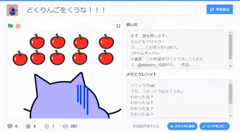

午前と午後の２回開催
午前はプログラミング初心者/未経験者向けプログラミング、Scratchのスプライトを操作するコントローラーとしてボタンや傾きを検出できるマイクロビットを活用。午後はラズパイ電子工作、はじめてのLinux OSコマンドとpythonのプログラミング体験、そしてラズタンク開発の続き。
参加者は午前12名・午後8名のニンジャ合計20名。ご家族は保護者・妹さん達・見学者が9名以上。メンターは3名。総計32名。
海外はマレーシアから2名がオンライン参加してくれました。今度ゆっくり海外のお話も聞きたいなと思いつつ、今日は一緒にはじめてのScratchを体験しました（下図のリンゴキャッチです）。そして改めて気付かされたのがScratchでの「着せ替え」やっぱり女の子ならではの作品です。着せ替えというアイディアを教わったので、今度みんなに教えよっと。横スクロール型作品は主人公のスムーズな動きのアニメがかわいい。ユースメンターはたくさん作品を紹介してくれました。
会場ではマイクロビットを操作用コントローラーとして使ったScratch作品を micro:bit more でプログラミングしています。はじめて作ったという魔女と熊のアニメは「ガルルル」という声がイイ感じ。AボタンでジャンプしてBボタンで元気玉が飛び出すゲームもステキ。PCトラブルがあって時間がなかった子は、わずか数十分でAボタンで発砲・Bボタンで弾込めリロードするシューティングを再現、なかなかのスキル持ちだとお見受けした。
会場とオンラインの同時開催です
会場のニンジャにリンゴを選んでもらって毒ではないリンゴを食べる、黒ひげ危機一髪系のゲーム。これは会場のみんなと仲良く遊べる、楽しい時間をありがとう。

午後の電子工作ではラズパイのGPIOについて研究。GPIOの入出力種類を紹介し、その中からPWMの「パルス」に注目して、pythonのプログラムを使って周波数の変化・デューティ比の変化をしつつ10%,30%,50%,80%,100%での波形の違いを観測。勘のいい子が10回に3回ONするのが30%と気付き、オシロスコープの波形を50%は１秒間に1~5回がOFF、6~10回がONと説明してくれたので理解がしやすくなった。ここでの目的はラズタンクのモーター速度を高速と低速にプログラムで切り替えすること。想像以上にニンジャが興味を持ってくれたので。
オシロスコープはニンジャの保護者（K君パパ）が展示を提供してくれました。ありがとうございます。
青梅市で開催している「IT未来塾」の修了生がメンバーに加わったので、今日から Linux OS コマンドと python の入門をスタート。今回はラズタンクチームと入門チームの２つにグループ分けしたが次回はみんなで一緒にできるようにテーマを考えようと思う。せっかくカメラがついているから画像認識AIなんてどうかなと話してみた。
2022年夏から制作を開始したラズタンクの成果発表用に動画撮影をするもの。後日、動画編集して2023年1月の子どもフェスタで発表します。
Connpassでイベント告知するので、またの参加をお待ちしています。
参加申し込みはこちらのConnpassから